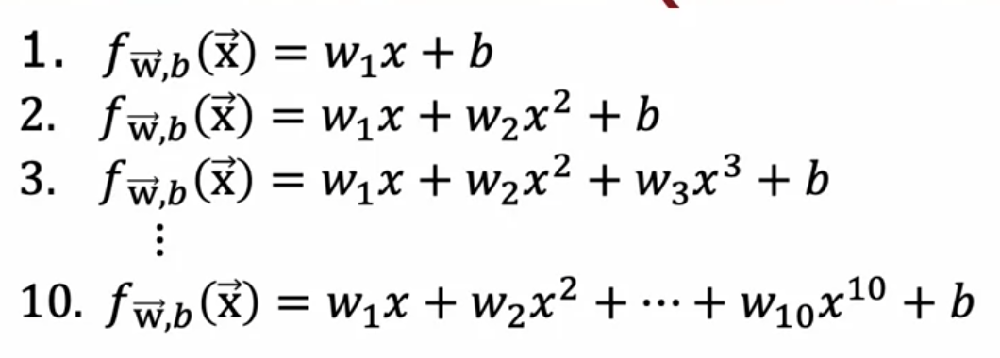
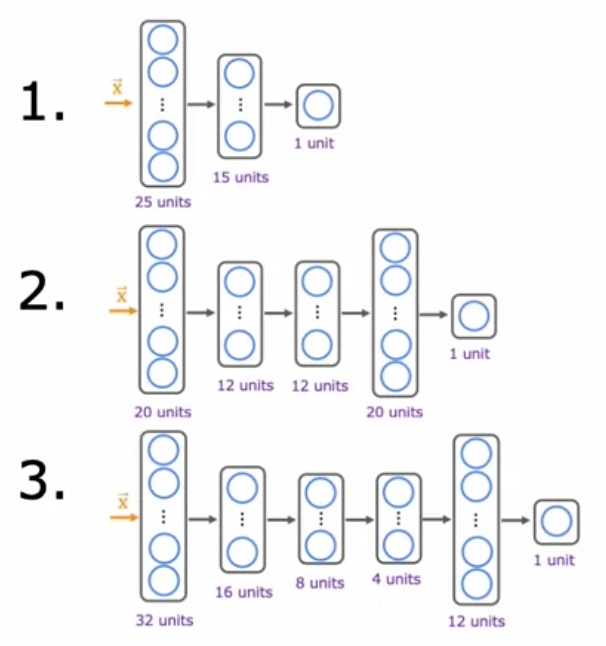

This you will practice how to quantify a learning algorithm’s performance and compare different models.
This Back Propagation is part of DeepLearning.AI course: Machine Learning Specialization / Course 2: Advanced Learning Algorithms: Advice for applying machine learning You will build and train a neural network with TensorFlow to perform multi-class classification in the second course of the Machine Learning Specialization. Ensure that your machine learning models are generalizable by applying best practices for machine learning development. You will build and train a neural network using TensorFlow to perform multi-class classification in the second course of the Machine Learning Specialization. Implement best practices for machine learning development to ensure that your models are generalizable to real-world data and tasks. Create and use decision trees and tree ensemble methods, including random forests and boosted trees.
This is my learning experience of data science through DeepLearning.AI. These repository contributions are part of my learning journey through my graduate program masters of applied data sciences (MADS) at University Of Michigan, DeepLearning.AI, Coursera & DataCamp. You can find my similar articles & more stories at my medium & LinkedIn profile. I am available at kaggle & github blogs & github repos. Thank you for your motivation, support & valuable feedback.
These include projects, coursework & notebook which I learned through my data science journey. They are created for reproducible & future reference purpose only. All source code, slides or screenshot are intellectual property of respective content authors. If you find these contents beneficial, kindly consider learning subscription from DeepLearning.AI Subscription, Coursera, DataCamp
Lab: Model Evaluation and Selection
Quantifying a learning algorithm’s performance and comparing different models are some of the common tasks when applying machine learning to real world applications. In this lab, you will practice doing these using the tips shared in class. Specifically, you will:
split datasets into training, cross validation, and test sets
evaluate regression and classification models
add polynomial features to improve the performance of a linear regression model
compare several neural network architectures
This lab will also help you become familiar with the code you’ll see in this week’s programming assignment. Let’s begin!
Code
# for array computations and loading dataimport numpy as np# for building linear regression models and preparing datafrom sklearn.linear_model import LinearRegressionfrom sklearn.preprocessing import StandardScaler, PolynomialFeaturesfrom sklearn.model_selection import train_test_splitfrom sklearn.metrics import mean_squared_error# for building and training neural networksimport tensorflow as tf# custom functionsimport utils# reduce display precision on numpy arraysnp.set_printoptions(precision=2)# suppress warningstf.get_logger().setLevel('ERROR')tf.autograph.set_verbosity(0)
Regression
First, you will be tasked to develop a model for a regression problem. You are given the dataset below consisting of 50 examples of an input feature x and its corresponding target y.
Code
# Load the dataset from the text filedata = np.loadtxt('./data/data_w3_ex1.csv', delimiter=',')# Split the inputs and outputs into separate arraysx = data[:,0]y = data[:,1]# Convert 1-D arrays into 2-D because the commands later will require itx = np.expand_dims(x, axis=1)y = np.expand_dims(y, axis=1)print(f"the shape of the inputs x is: {x.shape}")print(f"the shape of the targets y is: {y.shape}")
the shape of the inputs x is: (50, 1)
the shape of the targets y is: (50, 1)
You can plot the dataset to get an idea of how the target behaves with respect to the input. In case you want to inspect the code, you can find the plot_dataset() function in the utils.py file outside this notebook.
Code
# Plot the entire datasetutils.plot_dataset(x=x, y=y, title="input vs. target")
Split the dataset into training, cross validation, and test sets
In previous labs, you might have used the entire dataset to train your models. In practice however, it is best to hold out a portion of your data to measure how well your model generalizes to new examples. This will let you know if the model has overfit to your training set.
As mentioned in the lecture, it is common to split your data into three parts:
training set - used to train the model
cross validation set (also called validation, development, or dev set) - used to evaluate the different model configurations you are choosing from. For example, you can use this to make a decision on what polynomial features to add to your dataset.
test set - used to give a fair estimate of your chosen model’s performance against new examples. This should not be used to make decisions while you are still developing the models.
Scikit-learn provides a train_test_split function to split your data into the parts mentioned above. In the code cell below, you will split the entire dataset into 60% training, 20% cross validation, and 20% test.
Code
# Get 60% of the dataset as the training set. Put the remaining 40% in temporary variables: x_ and y_.x_train, x_, y_train, y_ = train_test_split(x, y, test_size=0.40, random_state=1)# Split the 40% subset above into two: one half for cross validation and the other for the test setx_cv, x_test, y_cv, y_test = train_test_split(x_, y_, test_size=0.50, random_state=1)# Delete temporary variablesdel x_, y_print(f"the shape of the training set (input) is: {x_train.shape}")print(f"the shape of the training set (target) is: {y_train.shape}\n")print(f"the shape of the cross validation set (input) is: {x_cv.shape}")print(f"the shape of the cross validation set (target) is: {y_cv.shape}\n")print(f"the shape of the test set (input) is: {x_test.shape}")print(f"the shape of the test set (target) is: {y_test.shape}")
the shape of the training set (input) is: (30, 1)
the shape of the training set (target) is: (30, 1)
the shape of the cross validation set (input) is: (10, 1)
the shape of the cross validation set (target) is: (10, 1)
the shape of the test set (input) is: (10, 1)
the shape of the test set (target) is: (10, 1)
You can plot the dataset again below to see which points were used as training, cross validation, or test data.
Code
utils.plot_train_cv_test(x_train, y_train, x_cv, y_cv, x_test, y_test, title="input vs. target")
Fit a linear model
Now that you have split the data, one of the first things you can try is to fit a linear model. You will do that in the next sections below.
Feature scaling
In the previous course of this specialization, you saw that it is usually a good idea to perform feature scaling to help your model converge faster. This is especially true if your input features have widely different ranges of values. Later in this lab, you will be adding polynomial terms so your input features will indeed have different ranges. For example, \(x\) runs from around 1600 to 3600, while \(x^2\) will run from 2.56 million to 12.96 million.
You will only use \(x\) for this first model but it’s good to practice feature scaling now so you can apply it later. For that, you will use the StandardScaler class from scikit-learn. This computes the z-score of your inputs. As a refresher, the z-score is given by the equation:
\[ z = \frac{x - \mu}{\sigma} \]
where \(\mu\) is the mean of the feature values and \(\sigma\) is the standard deviation. The code below shows how to prepare the training set using the said class. You can plot the results again to inspect if it still follows the same pattern as before. The new graph should have a reduced range of values for x.
Code
# Initialize the classscaler_linear = StandardScaler()# Compute the mean and standard deviation of the training set then transform itX_train_scaled = scaler_linear.fit_transform(x_train)print(f"Computed mean of the training set: {scaler_linear.mean_.squeeze():.2f}")print(f"Computed standard deviation of the training set: {scaler_linear.scale_.squeeze():.2f}")# Plot the resultsutils.plot_dataset(x=X_train_scaled, y=y_train, title="scaled input vs. target")
Computed mean of the training set: 2504.06
Computed standard deviation of the training set: 574.85
Train the model
Next, you will create and train a regression model. For this lab, you will use the LinearRegression class but take note that there are other linear regressors which you can also use.
Code
# Initialize the classlinear_model = LinearRegression()# Train the modellinear_model.fit(X_train_scaled, y_train )
LinearRegression()
In a Jupyter environment, please rerun this cell to show the HTML representation or trust the notebook. On GitHub, the HTML representation is unable to render, please try loading this page with nbviewer.org.
LinearRegression()
Evaluate the Model
To evaluate the performance of your model, you will want to measure the error for the training and cross validation sets. For the training error, recall the equation for calculating the mean squared error (MSE):
\[J_{train}(\vec{w}, b) = \frac{1}{2m_{train}}\left[\sum_{i=1}^{m_{train}}(f_{\vec{w},b}(\vec{x}_{train}^{(i)}) - y_{train}^{(i)})^2\right]\]
Scikit-learn also has a built-in mean_squared_error() function that you can use. Take note though that as per the documentation, scikit-learn’s implementation only divides by m and not 2*m (where m = number of examples). Thus, to match the equation above, you can use the scikit-learn function then divide by two as shown below. We also included a for-loop implementation so you can check that it’s equal.
Another thing to take note: since you trained the model on scaled values (i.e. using the z-score), you should also feed in the scaled training set instead of its raw values.
Code
# Feed the scaled training set and get the predictionsyhat = linear_model.predict(X_train_scaled)# Use scikit-learn's utility function and divide by 2print(f"training MSE (using sklearn function): {mean_squared_error(y_train, yhat) /2}")# for-loop implementationtotal_squared_error =0for i inrange(len(yhat)): squared_error_i = (yhat[i] - y_train[i])**2 total_squared_error += squared_error_imse = total_squared_error / (2*len(yhat))print(f"training MSE (for-loop implementation): {mse.squeeze()}")
training MSE (using sklearn function): 406.19374192533127
training MSE (for-loop implementation): 406.19374192533127
You can then compute the MSE for the cross validation set with basically the same equation:
\[J_{cv}(\vec{w}, b) = \frac{1}{2m_{cv}}\left[\sum_{i=1}^{m_{cv}}(f_{\vec{w},b}(\vec{x}_{cv}^{(i)}) - y_{cv}^{(i)})^2\right]\]
As with the training set, you will also want to scale the cross validation set. An important thing to note when using the z-score is you have to use the mean and standard deviation of the training set when scaling the cross validation set. This is to ensure that your input features are transformed as expected by the model. One way to gain intuition is with this scenario:
Say that your training set has an input feature equal to 500 which is scaled down to 0.5 using the z-score.
After training, your model is able to accurately map this scaled input x=0.5 to the target output y=300.
Now let’s say that you deployed this model and one of your users fed it a sample equal to 500.
If you get this input sample’s z-score using any other values of the mean and standard deviation, then it might not be scaled to 0.5 and your model will most likely make a wrong prediction (i.e. not equal to y=300).
You will scale the cross validation set below by using the same StandardScaler you used earlier but only calling its transform() method instead of fit_transform().
Code
# Scale the cross validation set using the mean and standard deviation of the training setX_cv_scaled = scaler_linear.transform(x_cv)print(f"Mean used to scale the CV set: {scaler_linear.mean_.squeeze():.2f}")print(f"Standard deviation used to scale the CV set: {scaler_linear.scale_.squeeze():.2f}")# Feed the scaled cross validation setyhat = linear_model.predict(X_cv_scaled)# Use scikit-learn's utility function and divide by 2print(f"Cross validation MSE: {mean_squared_error(y_cv, yhat) /2}")
Mean used to scale the CV set: 2504.06
Standard deviation used to scale the CV set: 574.85
Cross validation MSE: 551.7789026952216
Adding Polynomial Features
From the graphs earlier, you may have noticed that the target y rises more sharply at smaller values of x compared to higher ones. A straight line might not be the best choice because the target y seems to flatten out as x increases. Now that you have these values of the training and cross validation MSE from the linear model, you can try adding polynomial features to see if you can get a better performance. The code will mostly be the same but with a few extra preprocessing steps. Let’s see that below.
Create the additional features
First, you will generate the polynomial features from your training set. The code below demonstrates how to do this using the PolynomialFeatures class. It will create a new input feature which has the squared values of the input x (i.e. degree=2).
Code
# Instantiate the class to make polynomial featurespoly = PolynomialFeatures(degree=2, include_bias=False)# Compute the number of features and transform the training setX_train_mapped = poly.fit_transform(x_train)# Preview the first 5 elements of the new training set. Left column is `x` and right column is `x^2`# Note: The `e+<number>` in the output denotes how many places the decimal point should# be moved. For example, `3.24e+03` is equal to `3240`print(X_train_mapped[:5])
You will then scale the inputs as before to narrow down the range of values.
Code
# Instantiate the classscaler_poly = StandardScaler()# Compute the mean and standard deviation of the training set then transform itX_train_mapped_scaled = scaler_poly.fit_transform(X_train_mapped)# Preview the first 5 elements of the scaled training set.print(X_train_mapped_scaled[:5])
You can then proceed to train the model. After that, you will measure the model’s performance against the cross validation set. Like before, you should make sure to perform the same transformations as you did in the training set. You will add the same number of polynomial features then scale the range of values.
Code
# Initialize the classmodel = LinearRegression()# Train the modelmodel.fit(X_train_mapped_scaled, y_train )# Compute the training MSEyhat = model.predict(X_train_mapped_scaled)print(f"Training MSE: {mean_squared_error(y_train, yhat) /2}")# Add the polynomial features to the cross validation setX_cv_mapped = poly.transform(x_cv)# Scale the cross validation set using the mean and standard deviation of the training setX_cv_mapped_scaled = scaler_poly.transform(X_cv_mapped)# Compute the cross validation MSEyhat = model.predict(X_cv_mapped_scaled)print(f"Cross validation MSE: {mean_squared_error(y_cv, yhat) /2}")
Training MSE: 49.11160933402521
Cross validation MSE: 87.69841211111913
You’ll notice that the MSEs are significantly better for both the training and cross validation set when you added the 2nd order polynomial. You may want to introduce more polynomial terms and see which one gives the best performance. As shown in class, you can have 10 different models like this:

You can create a loop that contains all the steps in the previous code cells. Here is one implementation that adds polynomial features up to degree=10. We’ll plot it at the end to make it easier to compare the results for each model.
Code
# Initialize lists containing the lists, models, and scalerstrain_mses = []cv_mses = []models = []scalers = []# Loop over 10 times. Each adding one more degree of polynomial higher than the last.for degree inrange(1,11):# Add polynomial features to the training set poly = PolynomialFeatures(degree, include_bias=False) X_train_mapped = poly.fit_transform(x_train)# Scale the training set scaler_poly = StandardScaler() X_train_mapped_scaled = scaler_poly.fit_transform(X_train_mapped) scalers.append(scaler_poly)# Create and train the model model = LinearRegression() model.fit(X_train_mapped_scaled, y_train ) models.append(model)# Compute the training MSE yhat = model.predict(X_train_mapped_scaled) train_mse = mean_squared_error(y_train, yhat) /2 train_mses.append(train_mse)# Add polynomial features and scale the cross validation set poly = PolynomialFeatures(degree, include_bias=False) X_cv_mapped = poly.fit_transform(x_cv) X_cv_mapped_scaled = scaler_poly.transform(X_cv_mapped)# Compute the cross validation MSE yhat = model.predict(X_cv_mapped_scaled) cv_mse = mean_squared_error(y_cv, yhat) /2 cv_mses.append(cv_mse)# Plot the resultsdegrees=range(1,11)utils.plot_train_cv_mses(degrees, train_mses, cv_mses, title="degree of polynomial vs. train and CV MSEs")
Choosing the best model
When selecting a model, you want to choose one that performs well both on the training and cross validation set. It implies that it is able to learn the patterns from your training set without overfitting. If you used the defaults in this lab, you will notice a sharp drop in cross validation error from the models with degree=1 to degree=2. This is followed by a relatively flat line up to degree=5. After that, however, the cross validation error is generally getting worse as you add more polynomial features. Given these, you can decide to use the model with the lowest cv_mse as the one best suited for your application.
Code
# Get the model with the lowest CV MSE (add 1 because list indices start at 0)# This also corresponds to the degree of the polynomial addeddegree = np.argmin(cv_mses) +1print(f"Lowest CV MSE is found in the model with degree={degree}")
Lowest CV MSE is found in the model with degree=4
You can then publish the generalization error by computing the test set’s MSE. As usual, you should transform this data the same way you did with the training and cross validation sets.
Code
# Add polynomial features to the test setpoly = PolynomialFeatures(degree, include_bias=False)X_test_mapped = poly.fit_transform(x_test)# Scale the test setX_test_mapped_scaled = scalers[degree-1].transform(X_test_mapped)# Compute the test MSEyhat = models[degree-1].predict(X_test_mapped_scaled)test_mse = mean_squared_error(y_test, yhat) /2print(f"Training MSE: {train_mses[degree-1]:.2f}")print(f"Cross Validation MSE: {cv_mses[degree-1]:.2f}")print(f"Test MSE: {test_mse:.2f}")
Training MSE: 47.15
Cross Validation MSE: 79.43
Test MSE: 104.63
Neural Networks
The same model selection process can also be used when choosing between different neural network architectures. In this section, you will create the models shown below and apply it to the same regression task above.

Prepare the Data
You will use the same training, cross validation, and test sets you generated in the previous section. From earlier lectures in this course, you may have known that neural networks can learn non-linear relationships so you can opt to skip adding polynomial features. The code is still included below in case you want to try later and see what effect it will have on your results. The default degree is set to 1 to indicate that it will just use x_train, x_cv, and x_test as is (i.e. without any additional polynomial features).
Next, you will scale the input features to help gradient descent converge faster. Again, notice that you are using the mean and standard deviation computed from the training set by just using transform() in the cross validation and test sets instead of fit_transform().
Code
# Scale the features using the z-scorescaler = StandardScaler()X_train_mapped_scaled = scaler.fit_transform(X_train_mapped)X_cv_mapped_scaled = scaler.transform(X_cv_mapped)X_test_mapped_scaled = scaler.transform(X_test_mapped)
Build and train the models
You will then create the neural network architectures shown earlier. The code is provided in the build_models() function in the utils.py file in case you want to inspect or modify it. You will use that in the loop below then proceed to train the models. For each model, you will also record the training and cross validation errors.
Code
# Initialize lists that will contain the errors for each modelnn_train_mses = []nn_cv_mses = []# Build the modelsnn_models = utils.build_models()# Loop over the the modelsfor model in nn_models:# Setup the loss and optimizer model.compile( loss='mse', optimizer=tf.keras.optimizers.Adam(learning_rate=0.1), )print(f"Training {model.name}...")# Train the model model.fit( X_train_mapped_scaled, y_train, epochs=300, verbose=0 )print("Done!\n")# Record the training MSEs yhat = model.predict(X_train_mapped_scaled) train_mse = mean_squared_error(y_train, yhat) /2 nn_train_mses.append(train_mse)# Record the cross validation MSEs yhat = model.predict(X_cv_mapped_scaled) cv_mse = mean_squared_error(y_cv, yhat) /2 nn_cv_mses.append(cv_mse)# print resultsprint("RESULTS:")for model_num inrange(len(nn_train_mses)):print(f"Model {model_num+1}: Training MSE: {nn_train_mses[model_num]:.2f}, "+f"CV MSE: {nn_cv_mses[model_num]:.2f}" )
WARNING:absl:At this time, the v2.11+ optimizer `tf.keras.optimizers.Adam` runs slowly on M1/M2 Macs, please use the legacy Keras optimizer instead, located at `tf.keras.optimizers.legacy.Adam`.
WARNING:absl:There is a known slowdown when using v2.11+ Keras optimizers on M1/M2 Macs. Falling back to the legacy Keras optimizer, i.e., `tf.keras.optimizers.legacy.Adam`.
2023-05-12 18:07:36.222948: W tensorflow/tsl/platform/profile_utils/cpu_utils.cc:128] Failed to get CPU frequency: 0 Hz
WARNING:absl:At this time, the v2.11+ optimizer `tf.keras.optimizers.Adam` runs slowly on M1/M2 Macs, please use the legacy Keras optimizer instead, located at `tf.keras.optimizers.legacy.Adam`.
WARNING:absl:There is a known slowdown when using v2.11+ Keras optimizers on M1/M2 Macs. Falling back to the legacy Keras optimizer, i.e., `tf.keras.optimizers.legacy.Adam`.
WARNING:absl:At this time, the v2.11+ optimizer `tf.keras.optimizers.Adam` runs slowly on M1/M2 Macs, please use the legacy Keras optimizer instead, located at `tf.keras.optimizers.legacy.Adam`.
WARNING:absl:There is a known slowdown when using v2.11+ Keras optimizers on M1/M2 Macs. Falling back to the legacy Keras optimizer, i.e., `tf.keras.optimizers.legacy.Adam`.
Metal device set to: Apple M2 Pro
Training model_1...
Done!
1/1 [==============================] - 0s 39ms/step
1/1 [==============================] - 0s 179ms/step
Training model_2...
Done!
1/1 [==============================] - 0s 35ms/step
1/1 [==============================] - 0s 98ms/step
Training model_3...
Done!
1/1 [==============================] - 0s 40ms/step
1/1 [==============================] - 0s 30ms/step
RESULTS:
Model 1: Training MSE: 406.19, CV MSE: 551.78
Model 2: Training MSE: 406.19, CV MSE: 551.78
Model 3: Training MSE: 73.40, CV MSE: 112.29
From the recorded errors, you can decide which is the best model for your application. Look at the results above and see if you agree with the selected model_num below. Finally, you will compute the test error to estimate how well it generalizes to new examples.
Code
# Select the model with the lowest CV MSEmodel_num =3# Compute the test MSEyhat = nn_models[model_num-1].predict(X_test_mapped_scaled)test_mse = mean_squared_error(y_test, yhat) /2print(f"Selected Model: {model_num}")print(f"Training MSE: {nn_train_mses[model_num-1]:.2f}")print(f"Cross Validation MSE: {nn_cv_mses[model_num-1]:.2f}")print(f"Test MSE: {test_mse:.2f}")
1/1 [==============================] - 0s 11ms/step
Selected Model: 3
Training MSE: 73.40
Cross Validation MSE: 112.29
Test MSE: 131.62
Classification
In this last part of the lab, you will practice model evaluation and selection on a classification task. The process will be similar, with the main difference being the computation of the errors. You will see that in the following sections.
Load the Dataset
First, you will load a dataset for a binary classification task. It has 200 examples of two input features (x1 and x2), and a target y of either 0 or 1.
Code
# Load the dataset from a text filedata = np.loadtxt('./data/data_w3_ex2.csv', delimiter=',')# Split the inputs and outputs into separate arraysx_bc = data[:,:-1]y_bc = data[:,-1]# Convert y into 2-D because the commands later will require it (x is already 2-D)y_bc = np.expand_dims(y_bc, axis=1)print(f"the shape of the inputs x is: {x_bc.shape}")print(f"the shape of the targets y is: {y_bc.shape}")
the shape of the inputs x is: (200, 2)
the shape of the targets y is: (200, 1)
You can plot the dataset to examine how the examples are separated.
Split the dataset
Next, you will generate the training, cross validation, and test sets. You will use the same 60/20/20 proportions as before.
Code
from sklearn.model_selection import train_test_split# Get 60% of the dataset as the training set. Put the remaining 40% in temporary variables.x_bc_train, x_, y_bc_train, y_ = train_test_split(x_bc, y_bc, test_size=0.40, random_state=1)# Split the 40% subset above into two: one half for cross validation and the other for the test setx_bc_cv, x_bc_test, y_bc_cv, y_bc_test = train_test_split(x_, y_, test_size=0.50, random_state=1)# Delete temporary variablesdel x_, y_print(f"the shape of the training set (input) is: {x_bc_train.shape}")print(f"the shape of the training set (target) is: {y_bc_train.shape}\n")print(f"the shape of the cross validation set (input) is: {x_bc_cv.shape}")print(f"the shape of the cross validation set (target) is: {y_bc_cv.shape}\n")print(f"the shape of the test set (input) is: {x_bc_test.shape}")print(f"the shape of the test set (target) is: {y_bc_test.shape}")
the shape of the training set (input) is: (120, 2)
the shape of the training set (target) is: (120, 1)
the shape of the cross validation set (input) is: (40, 2)
the shape of the cross validation set (target) is: (40, 1)
the shape of the test set (input) is: (40, 2)
the shape of the test set (target) is: (40, 1)
Evaluating the error for classification models
In the previous sections on regression models, you used the mean squared error to measure how well your model is doing. For classification, you can get a similar metric by getting the fraction of the data that the model has misclassified. For example, if your model made wrong predictions for 2 samples out of 5, then you will report an error of 40% or 0.4. The code below demonstrates this using a for-loop and also with Numpy’s mean() function.
Code
# Sample model outputprobabilities = np.array([0.2, 0.6, 0.7, 0.3, 0.8])# Apply a threshold to the model output. If greater than 0.5, set to 1. Else 0.predictions = np.where(probabilities >=0.5, 1, 0)# Ground truth labelsground_truth = np.array([1, 1, 1, 1, 1])# Initialize counter for misclassified datamisclassified =0# Get number of predictionsnum_predictions =len(predictions)# Loop over each predictionfor i inrange(num_predictions):# Check if it matches the ground truthif predictions[i] != ground_truth[i]:# Add one to the counter if the prediction is wrong misclassified +=1# Compute the fraction of the data that the model misclassifiedfraction_error = misclassified/num_predictionsprint(f"probabilities: {probabilities}")print(f"predictions with threshold=0.5: {predictions}")print(f"targets: {ground_truth}")print(f"fraction of misclassified data (for-loop): {fraction_error}")print(f"fraction of misclassified data (with np.mean()): {np.mean(predictions != ground_truth)}")
probabilities: [0.2 0.6 0.7 0.3 0.8]
predictions with threshold=0.5: [0 1 1 0 1]
targets: [1 1 1 1 1]
fraction of misclassified data (for-loop): 0.4
fraction of misclassified data (with np.mean()): 0.4
Build and train the model
You will use the same neural network architectures in the previous section so you can call the build_models() function again to create new instances of these models.
You will follow the recommended approach mentioned last week where you use a linear activation for the output layer (instead of sigmoid) then set from_logits=True when declaring the loss function of the model. You will use the binary crossentropy loss because this is a binary classification problem.
After training, you will use a sigmoid function to convert the model outputs into probabilities. From there, you can set a threshold and get the fraction of misclassified examples from the training and cross validation sets.
You can see all these in the code cell below.
Code
# Initialize lists that will contain the errors for each modelnn_train_error = []nn_cv_error = []# Build the modelsmodels_bc = utils.build_models()# Loop over each modelfor model in models_bc:# Setup the loss and optimizer model.compile( loss=tf.keras.losses.BinaryCrossentropy(from_logits=True), optimizer=tf.keras.optimizers.Adam(learning_rate=0.01), )print(f"Training {model.name}...")# Train the model model.fit( x_bc_train, y_bc_train, epochs=200, verbose=0 )print("Done!\n")# Set the threshold for classification threshold =0.5# Record the fraction of misclassified examples for the training set yhat = model.predict(x_bc_train) yhat = tf.math.sigmoid(yhat) yhat = np.where(yhat >= threshold, 1, 0) train_error = np.mean(yhat != y_bc_train) nn_train_error.append(train_error)# Record the fraction of misclassified examples for the cross validation set yhat = model.predict(x_bc_cv) yhat = tf.math.sigmoid(yhat) yhat = np.where(yhat >= threshold, 1, 0) cv_error = np.mean(yhat != y_bc_cv) nn_cv_error.append(cv_error)# Print the resultfor model_num inrange(len(nn_train_error)):print(f"Model {model_num+1}: Training Set Classification Error: {nn_train_error[model_num]:.5f}, "+f"CV Set Classification Error: {nn_cv_error[model_num]:.5f}" )
WARNING:absl:At this time, the v2.11+ optimizer `tf.keras.optimizers.Adam` runs slowly on M1/M2 Macs, please use the legacy Keras optimizer instead, located at `tf.keras.optimizers.legacy.Adam`.
WARNING:absl:There is a known slowdown when using v2.11+ Keras optimizers on M1/M2 Macs. Falling back to the legacy Keras optimizer, i.e., `tf.keras.optimizers.legacy.Adam`.
WARNING:absl:At this time, the v2.11+ optimizer `tf.keras.optimizers.Adam` runs slowly on M1/M2 Macs, please use the legacy Keras optimizer instead, located at `tf.keras.optimizers.legacy.Adam`.
WARNING:absl:There is a known slowdown when using v2.11+ Keras optimizers on M1/M2 Macs. Falling back to the legacy Keras optimizer, i.e., `tf.keras.optimizers.legacy.Adam`.
WARNING:absl:At this time, the v2.11+ optimizer `tf.keras.optimizers.Adam` runs slowly on M1/M2 Macs, please use the legacy Keras optimizer instead, located at `tf.keras.optimizers.legacy.Adam`.
WARNING:absl:There is a known slowdown when using v2.11+ Keras optimizers on M1/M2 Macs. Falling back to the legacy Keras optimizer, i.e., `tf.keras.optimizers.legacy.Adam`.
Training model_1...
Done!
4/4 [==============================] - 0s 4ms/step
2/2 [==============================] - 0s 83ms/step
Training model_2...
Done!
4/4 [==============================] - 0s 6ms/step
2/2 [==============================] - 0s 21ms/step
Training model_3...
Done!
4/4 [==============================] - 0s 7ms/step
2/2 [==============================] - 0s 25ms/step
Model 1: Training Set Classification Error: 0.17500, CV Set Classification Error: 0.20000
Model 2: Training Set Classification Error: 0.15833, CV Set Classification Error: 0.05000
Model 3: Training Set Classification Error: 0.41667, CV Set Classification Error: 0.47500
From the output above, you can choose which one performed best. If there is a tie on the cross validation set error, then you can pick the one with the lower training set error. Finally, you can compute the test error to report the model’s generalization error.
Code
# Select the model with the lowest errormodel_num =2# Compute the test erroryhat = models_bc[model_num-1].predict(x_bc_test)yhat = tf.math.sigmoid(yhat)yhat = np.where(yhat >= threshold, 1, 0)nn_test_error = np.mean(yhat != y_bc_test)print(f"Selected Model: {model_num}")print(f"Training Set Classification Error: {nn_train_error[model_num-1]:.4f}")print(f"CV Set Classification Error: {nn_cv_error[model_num-1]:.4f}")print(f"Test Set Classification Error: {nn_test_error:.4f}")
2/2 [==============================] - 0s 5ms/step
Selected Model: 2
Training Set Classification Error: 0.1583
CV Set Classification Error: 0.0500
Test Set Classification Error: 0.1000